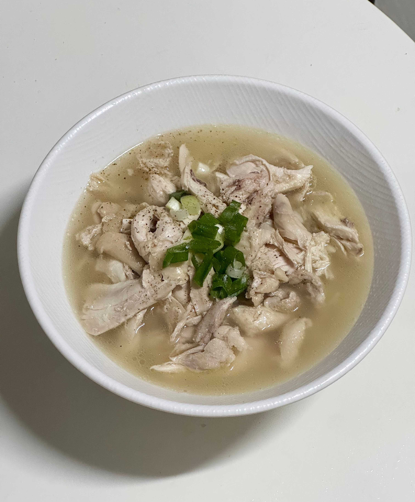

- 닭곰탕 -
속을 따뜻하게 채워주는 깊고 진한 닭곰탕

📝 재료
- 닭 한마리
- 대파 1대
- 양파 1개 (껍질 째)
- 물 3L (닭 3배)
- 소금, 후추
🍳 만드는 법
- 닭을 손질합니다. 배를 가위로 반 갈라 내장을 깨끗이 씻어줍니다.
- 냄비에 손질한 닭, 대파, 물을 넣고, 칼집 낸 양파도 함께 넣습니다.
- 약 30분간 끓인 후 닭을 건져내고, 육수는 다시 30분 더 끓입니다.
- 끓이는 동안 건져낸 닭의 살을 발라두고, 남은 뼈는 육수에 다시 넣어 끓입니다.
- 소금과 후추로 간을 맞추고, 송송 썬 대파를 올리면 완성입니다.
💡 TIP
뼈에서 나오는 콜라겐이 국물을 뽀얗고 깊게 만들어줘요.
닭다리나 가슴살만 쓸 경우, 육수 맛이 조금 약할 수 있어요.